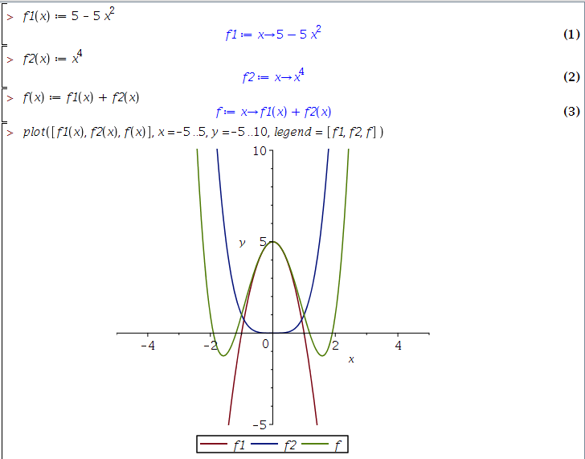
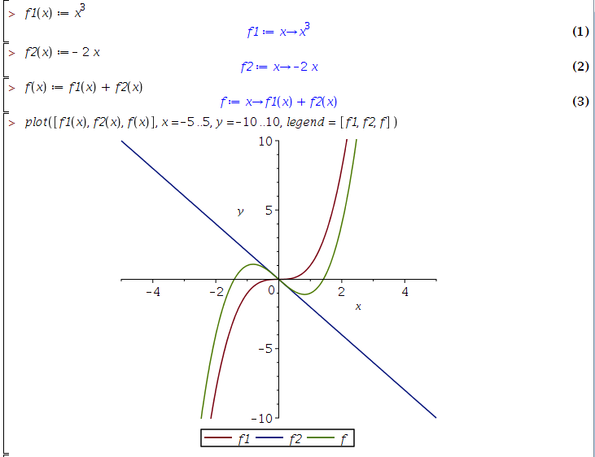

Week 1 Challenge Problems
Christopher Tralie
The Sum of Even Functions
Question:
If f1(x) is even and f2(x) is even, then f(x) = f1(x) + f2(x) is
- Even
- Odd
- Not necessarily either
Answer
First, it might be a good idea to start playing around with functions. For example, what if you let \[f_1(x) = 5x^2\] \[f_2(x) = -x^4 \]. Let's look at this maple (you can also test values by hand)

f certainly looks even in this example! And you can try other examples and you will continue to see even results. But how do we prove this in general? Well, let's go back to the definition of even functions: a function g is even if and only if \[ g(x) = g(-x) \]
Using this fact, we can do the following transformation to f(x):
| \[ f(-x) = f_1(-x) + f_2(-x) \] | Plugging in -x |
| \[ f(-x) = f_1(x) + f_2(x) = f(x) \] | Using the fact that f1 and f2 are even functions |
f(x) is even
The Sum of Odd Functions
Question:
If f1(x) is odd and f2(x) is odd, then f(x) = f1(x) + f2(x) is
- Even
- Odd
- Not necessarily either
Answer
Again, let's play around with some odd functions. For example, what if you let \[f_1(x) = x^3 \] \[f_2(x) = -2x \]. Let's look at this maple (you can also test values by hand)

f certainly looks odd in this example! And you can try other examples and you will continue to see odd results. But how do we prove this one now? Again, let's apply the definition: a function g is odd if and only if \[ g(x) = -g(-x) \]
Using this fact, we can do the following transformation to f(x):
| \[ f(-x) = f_1(-x) + f_2(-x) \] | Plugging in -x |
| \[ f(-x) = -f_1(x) + -f_2(x) = -f(x) \] | Using the fact that f1 and f2 are odd functions and factoring out a negative |
f(x) is odd
The Sum of An Even And Odd Function
Question:
If f1(x) is odd and f2(x) is even, then f(x) = f1(x) + f2(x) is
- Even
- Odd
- Not necessarily either
Answer
Again, let's play around with some odd functions. For example, what if you let \[f_1(x) = x^3 \] \[f_2(x) = x^2 \]. In this example, \[ f(-1) = (-1)^3 + (-1)^2 = 0\] and \[ f_1(1) = (1)^3 + (1)^2 = 2 \] Uh oh. Actually, we've already found a counter example where the function is neither even or odd. So in general, all bets are off with the sum of even and odd functions